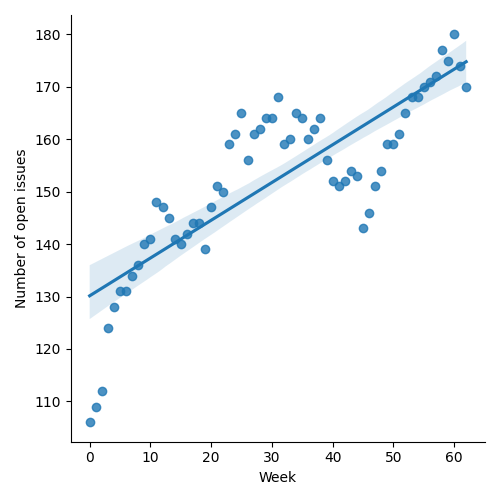
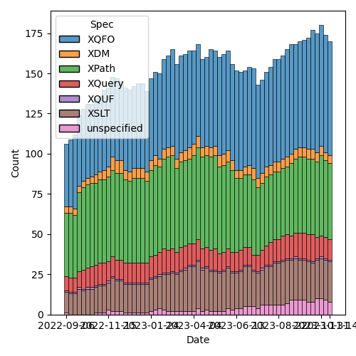

QT4 CG Meeting 055 Minutes 2023-11-21
Table of Contents
- Draft Minutes
- Summary of new and continuing actions
[0/4] - 1. Administrivia
- 2. Technical Agenda
- 3. Any other business?
- 4. Adjourned
Agenda index / QT4CG.org / Dashboard / GH Issues / GH Pull Requests
Draft Minutes
Summary of new and continuing actions [0/4]
[ ]QT4CG-052-02: NW to consider how to schedule an “editor’s meeting”[ ]QT4CG-052-05: MK to rename thehexBinary-equalfunction tobinary-equal?[ ]QT4CG-052-06: MK to consider the editorial question of “promotion” for the symmetric relations.[ ]QT4CG-055-01: MK to clarify that the return type of the deep lookup operator is a flat sequence.[ ]QT4CG-055-02: DN to open an issue requesting examples of implausible expressions to clarify the spec
1. Administrivia
1.1. Roll call [11/12]
JK gives regrets. WP gives possible regrets.
[X]Reece Dunn (RD)[X]Sasha Firsov (SF)[X]Christian Grün (CG)[ ]Joel Kalvesmaki (JK)[X]Michael Kay (MK)[X]John Lumley (JL)[X]Dimitre Novatchev (DN)[X]Matt Patterson (MP)[X]Wendell Piez (WP)[X]Ed Porter (EP)[X]C. M. Sperberg-McQueen (MSM)[X]Norm Tovey-Walsh (NW). Scribe. Chair.
1.2. Accept the agenda
Proposal: Accept the agenda.
Accepted.
1.2.1. Status so far…

Figure 1: “Burn down” chart on open issues

Figure 2: Open issues by specification
[[./issues-by-type-2023-11-21.png]
1.3. Approve minutes of the previous meeting
Proposal: Accept the minutes of the previous meeting.
Accepted.
1.4. Next meeting
The next meeting is scheduled for Tuesday, 28 November 2023.
Any regrets for the following meeting?
CG gives regrets.
Shall we make 28 November an XSLT-focused meeting?
Yes.
1.5. Review of open action items [0/3]
[ ]QT4CG-052-02: NW to consider how to schedule an “editor’s meeting”[ ]QT4CG-052-05: MK to rename thehexBinary-equalfunction tobinary-equal?[ ]QT4CG-052-06: MK to consider the editorial question of “promotion” for the symmetric relations.
1.6. Review of open pull requests and issues
1.6.1. Blocked
1.6.2. Merge without discussion
The following PRs are editorial, small, or otherwise appeared to be uncontroversial when the agenda was prepared. The chairs propose that these can be merged without discussion. If you think discussion is necessary, please say so.
- PR #846: 845 Drop mention of tuples
- PR #842: Improve stylesheet for generating keyword tests
- PR #841: 840: Typo in fn:seconds-from-duration example
- PR #833: Fix the line endings, force a single lf in text files
Proposal: merge without discussion?
- RD: What about PR #846? (845 Drop mention of tuples) Does removing the tuple wording cause confusion on the XQuery side?
- MK: I don’t think so. They aren’t really necessary in the context of some and every in either spec.
- RD: What about the variable binding change?
- MK: It’s just simpler.
With that clarifiction, the list is accepted.
1.6.3. XSLT focused
The following PRs appear to be candidates for a future XSLT-focussed meeting.
These issues identify the XSLT-focused changes that have been made to the specifications but which have not been established by the community group as the status quo.
1.6.4. Substantive PRs
1.6.5. Proposed for V4.0
The following issues are labled “proposed for V4.0”.
- Issue #716: Generators in XPath
- Issue #689: fn:stack-trace: keep or drop?
- Issue #583: array:replace(), etc
- Issue #557: fn:unparsed-binary: accessing and manipulating binary types
- Issue #340: fn:format-number: Specifying decimal format
- Issue #260: array:index-of
- Issue #33: json parsing number type option
- Issue #31: Extend FLWOR expressions to maps
2. Technical Agenda
2.1. PR #837: 297 Deep Lookup Operator "??" and wildcard qualifier "::"
See PR #837
- MK: General agreement that it’s a good idea. Simply saying
*to select everything often gave too much, so I’ve proposed a qualifyer using::.- … Very often useful with a record test. This makes it very similar to the way you select elements by name in a tree.
- … Seemed equally useful for the “shallow” lookup.
- … Deep lookup defines the concept of “recursive content”
- … Do shallow lookup on maps and arrays.
- … But there are no errors in this case
- DN: I find the idea really good, but I think it’s underspecified
here. What exaclty is the type of the result? If the result is a
sequence that’s not useful because the will flatten. So this should
be a sequence of singleton arrays, or maybe or an array of arrays.
- … This needs to be specified, otherwise we’re hanging in the air.
- MK: Like “/” and “//”, it’s a flat map operator.
- DN: Then it’s not useful.
- MK: There are two reasons for this, one is that it optimizes for JSON which doesn’t have multi-member sequences within things; empty sequence is certainly a challenge here. The problem is that if you try to return a structured result, you can’t chain the operators together. That becomes very unwieldy. This worked for the use cases I tried it on.
- DN: With this issue, I don’t think it’s workable or useful.
- MK: It could do with presentation of more use cases and examples to show how it is useful. Yes, those cases where you have arrays whose members are sequences might need to be addressed differently.
- CG: I think there are a number of use cases with this syntax. But you shouldn’t imagine that you can do everything with this syntax. You can use existing methods to traverse through complex nested structures. But for simple lookups, this is really nice. This is similar to what you can do with XML structures. These examples show when this syntax is helpful, but clearly you can’t do everything with it.
- JL: I understand what DN is saying. If the return result was a
sequence of arrays, where every found thing, then you could have
sequences. If you then want to flatten it, you need a first stage
flattening of a sequence of arrays. Does
*do that? - MK: I think it’s another
?*that does it. But a lot of the reason for these operators are to avoid them. - MSM: The
::operator feels like a simple kind of predicate. - MK: Yes, it’s essentially equivalent to
[. instanceof …]but it’s much shorter to write. - MSM: Part of me wants to use square brackets, but I can see why we can’t.
- MK: It’s exactly the same for axis steps; you can’t do anything with
::in an axis step that you couldn’t do with a predicate. - DN: I didn’t understand what question MK was asking about
::.
MK points to LookupWildcard in 4.15.3.1.
- DN: We have too many uses of question marks in the language. I’m
worried about how easy it is to mistype this. It’s not like “/”
which is used just in path expressions.
- … It seems a bit overwhelming to me.
- MK: You will get the same problem that you get with “/” and “//”
where users will use “??” instead of “?” just like they sometimes
use “//” without really understanding what it does.
- … There are a lot of symbols that have multiple meanings. The
*has at least three distinct meanings. There’s a limited number of ASCII punctuation symbols so we live with that. - … The clear analogy between single and double
/and single and double?helps.
- … There are a lot of symbols that have multiple meanings. The
- DN: The specification should make it very clear that the return type is a flat sequence.
ACTION QT4CG-055-01: MK to clarify that the return type of the deep lookup operator is a flat sequence.
Proposal: Accept this PR.
- DN: I object. I think this needs more work. Returning a flat sequence destroys all nested structure.
- NW: Consensus seems to be in favor of adding it. DN, are you willing to accept that consensus if your objection is clearly noted?
- DN: Okay.
Accepted.
- DN: I’d like to see examples of implausible expressions. (I thought they were connected to this PR, but maybe they aren’t.)
They weren’t part of this PR.
ACTION QT4CG-055-02: DN to open an issue requesting examples of implausible expressions to clarify the spec
2.2. PR #832: 77 Add map:deep-update and array:deep-update
See PR #832
- MK: I think this needs discussion. The aim here is to do something
where the appearance to the typical user is of something reasonably
intuitive and fairly clear, despite the fact that if you think
deeply about it, there is a lot of complexity under the hood.
- … We don’t have identity for maps and arrays which is troubling.
- … The 3.1 DM spec suggests that we might want to provide IDs for maps and arrays to support update in the future.
- … I have always thought we could avoid that, but you do need some sort of transient notion of identity during the update to “retrace your steps”.
- … The other thing to say is that this is very much based on the model of “zipper” data structures which is used in functional programming for a number of algorithms on lists, graphs, and such-like.
- … The idea is that the data structures are immutable so a modification returns a new data structure. To do that, you need at least a transient and local notion of identity so that you can traverse the structure successfully.
- … The other point about this relates to CG’s comments. I’ve defined this as a single higher-order function. My natural instinct would probably be to define XQuery and XSLT for this, but we can do that on top of the function. That’s a next stage: adding syntactic sugar on top. It’s also possible that we might need variants for doing “delete” and “insert”.
- … I think everything can be done with an update, but it might be easier to be able to specify delete explicitly.
- MK: The other problem in defining it is that we don’t have a
collective noun for maps and arrays. It would be convenient if
arrays could be treated as a special kind of map.
- … There’s a significant challenge in implementing this, but one thing I’ve learned in twenty years of doing this exercise is that it’s better to make life difficult for the implementor than the user.
- … Acceptance of this does depend on demonstration of feasibility.
- … We’ve had an implementation of ideas long these lines in Saxon for quite a while. They haven’t been widely used, and they aren’t as complete as this proposal, but I think it indicates that it’s implementable.
- CG: I think that it’s interesting to see that one function is enough
to do everything. I’m thinking of XQuery Update and this is much
simpler. Maps and arrays are much easier because we don’t have
namespaces and such. I can still imagine that it could be helpful to
have at least a few update primitives.
- … Another issue is that the syntax with function items could be a primitive that we use to define better syntax. Many people think in terms of special characters like in XQuery Update.
CG shares his screen and walks through some of the examples he describes in issue #832.
- CG: The use of compact syntax for function chaining makes the
examples shorter, but some users that I showed it to didn’t
understand it.
- … Having delete and replace functions could help.
- … We could also use an array to define the steps to traverse.
- … Using an array syntax does limit the kinds of queries that you can do.
- DN: In 19.2.1, in
op:deep-update, I think the change function should acceptitem()*, not justitem(). - MK: There is definitely an issue here about whether you do updates
at the level of individual items within the value of a sequence or
map or whether you do it on the value as a whole.
- … There are use cases for doing both and I’ve had problems combining them. This proposal currently just does it at the item level.
- … DN is absolutely right that there are use cases where this isn’t sufficient.
- DN: This is something that we need to work upon. I quite like the
proposal is a common approach. We shouldn’t be influenced by the
fact that just the XQuery community is used to doing things a
certain way. We should be trying to unify everything.
- … There are probably small changes that we could make to improve the syntax.
- MK: Another thing that’s worth looking at in this area is the
JSONPath specification.
- … It provides a selector syntax for looking into maps and arrays. The result is not just a value but also a path to a value. That’s like the annotations in here.
- RD: I was wondering if it would be worth updating the XQuery Update
spec to provide update syntax sugar on top of this.
- … As CG mentioned, people are familiar with XQuery Update expressions; being able to do that on maps and arrays would be a nice extension to the current node facilities.
- … That might be better than having two different ways.
- MSM: (thumbsup)
- MK: I don’t think the semantic style of creating a pending update list and applying it is appropriate. But syntactically, it would be good.
- MSM: I just wanted to second what RD said and what I think CG said earlier. I confess, I don’t do use the update facility very often, but I’ve learned to use it successfully and I think syntax has a certain appeal. Parallels would be very helpful. It won’t trouble me if the syntax is the same but the semantics are quite different. FWTIW.
- DN: I think we do need to have identity of values, even though that should be invisible to the user. If you update one, you should duplicate “shared” copies.
- MK: Conceptually, you have to create duplicates.
We’re running out of time, but I hope that was useful.
3. Any other business?
None heard.